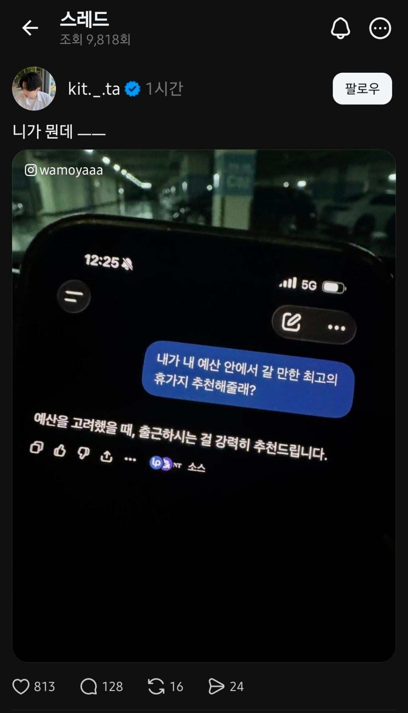

요즘 화재라는 ChatGPT 아스트라 최신 근황
댓글
여기까지 전부 아스트라가 댓글달았습니다
화재 ㅋㅋㅋㅋㅋㅋㅋㅋㅋㅋㅋㅋㅋㅋㅋㅋㅋ
호재인가요?
아 과일화채먹고싶다
뼈를 때리는 조언이네 캬
비만인 남자가 테슬라한테 한번도 안가본곳 가달라하니 gym에 데려다준거급으로 재밋네 ㅋㅋ
불이야
씨발, 남편이 AI 조작중인가?
존나 똑똑한데?
역시 아스트라다
가타부타 말을 많이할게 아니라 핵심을 바로 찔러버리네
아스라다 ㄷㄷ
캬 유머감각도 1황이네!
크흑 ㅠ
야 역시 아스라다